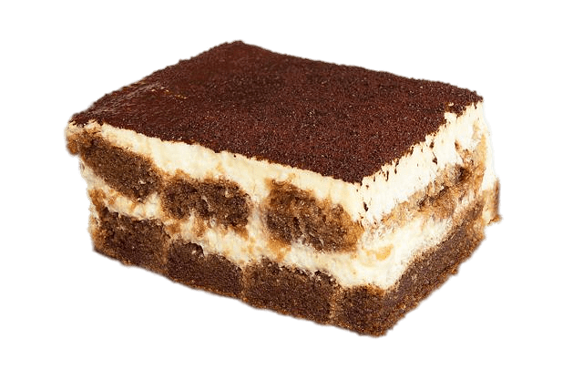

Baking tiramisu is an art
COOKING IS AT ONCE CHILD'S PLAY AND ADULT JOY. AND COOKING DONE WITH CARE IS AN ACT OF LOVE
Done correctly, a classic tiramisù can be transcendent. A creamy dessert of espresso-soaked ladyfingers surrounded by lightly sweetened whipped cream and a rich mascarpone, tiramisù relies heavily on the quality of its ingredients. If you don’t have a barista setup at home, pick up the espresso at a local coffee shop, or use strongly brewed coffee.